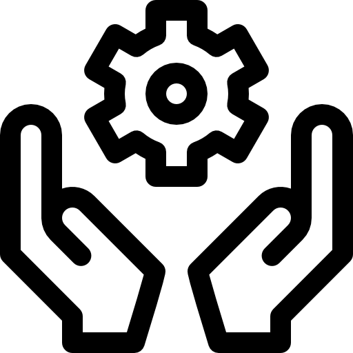
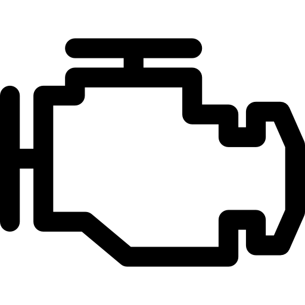
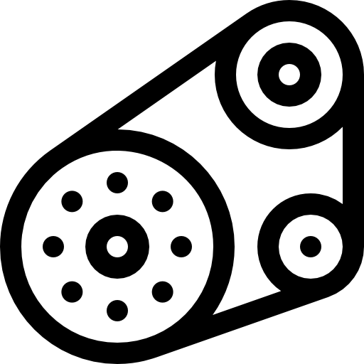
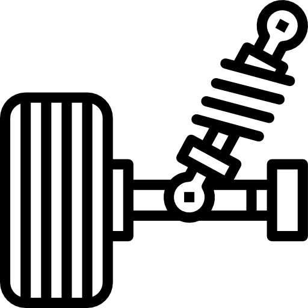

Contato
📍 R. Celestina Gomes Morales, 1-034 - Conj. Hab. Joaquim Guilherme de Oliveira, Bauru - SP
 (14) 99713-6910 - (14) 3238-8626
(14) 99713-6910 - (14) 3238-8626
Nosso Instagram
Nascida há mais de 20 anos em um espaço modesto idealizado por Rogério Rangel com muito trabalho e dedicação, tinha o objetivo de oferecer serviços mecânicos de qualidade e confiança. O que começou em uma garagem tomou forma aos poucos, graças à confiança dos clientes e ao compromisso de sempre entregar um trabalho com excelência. Durante todos esses anos, buscamos atender cada cliente com honestidade, transparência e respeito, cuidando de cada veículo como se fosse próprio. A experiência ao longo do tempo e a busca constante por atualizações, permitiram aperfeiçoar e ampliar a variedade de serviços oferecidos, aumentando também a qualidade nos diferentes tipos de manutenção e reparos. Hoje, continuamos com os mesmos valores do início: atendimento de confiança, serviço com excelência e compromisso com a satisfação de cada cliente. Temos orgulho da nossa história e agradecemos a todos que fizeram e continuam fazendo parte dela.




📍 R. Celestina Gomes Morales, 1-034 - Conj. Hab. Joaquim Guilherme de Oliveira, Bauru - SP
(14) 99713-6910 - (14) 3238-8626
Nosso Instagram